|
A comienzos de los años setenta se empezó a rotular con estos
términos al estilo musical que venían desarrollando varias bandas desde fines
de la década anterior o empezaban a tomar ese rumbo al principio de esa
década: King Crimson, Pink Floyd, Emerson Lake & Palmer, Genesis, Yes,
Jethro Tull, Van der Graaf Generator, Gentle Giant, Soft Machine, Camel, y otras. Todas estas bandas
eran inglesas, ya que fue en Inglaterra donde surgió este movimiento musical,
pero pronto se difundió universalmente y surgieron bandas de rock progresivo en
otros países, algunas de ellas con repercusión internacional (por ej. Can
y Triumvirat en Alemania, Gong en Francia, Focus en Holanda, Premiata Forneria
Marconi en Italia, Kansas en USA, Rush en Canadá).
Más que un estilo determinado, con cierta estructura o
forma musical, se
trataba de una actitud, ya que sus protagonistas buscaron romper con las
estructuras existentes en la música popular, ampliando los horizontes del rock,
incorporándole elementos de otros géneros (jazz, música concreta, electrónica, clásica,
preclásica, étnica), y nuevos sonidos
y estilos, a través del uso de instrumentos no convencionales en el
rock y/o de nuevos instrumentos o dispositivos que ampliaban enormemente la
capacidad sonora de una simple banda, acercándola más a una orquesta (sintetizadores,
melotrón). Se trataba de músicos virtuosos en la ejecución de
instrumentos, muchos de ellos formados con estudios musicales, que conocían a
los compositores barrocos y clásicos, a compositores importantes del siglo XX
(como Bartok y Stravinsky), a quienes revolucionaron los conceptos musicales
como el estadounidense John Cage desde la década de los 40 o el alemán Karlheinz
Stockhausen desde la década de los 50 (quienes experimentaron mucho con el azar y
el caos en la música), pero a la vez se sentían profundamente atraídos por el
rock, la música popular que ya venía enfervorizando a la juventud
del mundo desde hacía varios años, y en especial por el subgénero rock
psicodélico, cuya intención era "mover" la mente de quienes
escuchaban la música, tanto o más que hacer mover el cuerpo, objetivo original
del rock clásico. Correlato: tocaron rock, pero incorporando
sus bagajes, sus deseos de creación, sus momentos de experimentación, su
intención de crear nuevas sensaciones en la audiencia, a través de nuevas
formas o climas musicales, con improvisaciones, efectos sonoros, ruidos sugestivos,
atmósferas etéreas, largos tramos o piezas enteras instrumentales.
El rock era
la música de la juventud urbana del presente, por eso se universalizó y se
convirtió en la
primera música global. El rock
progresivo rompió con barreras culturales, fusionando el rock con otras
músicas contemporáneas de diferentes latitudes del planeta. Y rompió con las
barreras del tiempo, fusionando la música presente con la reinterpretación de
músicas del pasado y con intentos de penetrar en la música del futuro. Fue tan fuerte e influyente esta actitud, que
en aquellos años pueden encontrarse elementos de rock progresivo en discos de bandas de
otros estilos, por ejemplo en el excelente album doble conceptual Quadrophenia, de la banda de rock clásico The
Who, editado en 1973, en base al cual se hizo luego un film. También puede
nombrarse el caso de Led Zeppelin, máximo exponente del hard-rock: desde sus
inicios Jimmy Page buscó nuevos sonidos, usando el dispositivo electrónico theremin, una especie de pequeño
radar, en el tema Whole lotta love en 1969 (tanto en
estudio como posteriormente en vivo) y tocando su guitarra con un arco de
cello cuando hacían en vivo Dazed and confused (este tema en vivo duraba
más de 20 minutos); la banda incorporó worldmusic a partir de su tercer disco en
1970 (al tocar esa música Page usó mucho guitarra acústica y Jones la
mandolina), y en posteriores
trabajos grabó
temas afines al progresivo, como The rain song y No
quarter, ambos en 1973, y Kashmir, en 1975 (en los que Jones tocó
melotrón/sintetizador/piano eléctrico; en Kashmir Jones también dirigió
una sección de cuerdas y otra de vientos). En vivo, No quarter duraba más
de 10 minutos e incluía improvisación en piano por parte de Jones, con aire de
música clásica. Otro ejemplo es Jon Lord,
tecladista de otra banda exponente del hard-rock temprano y precursor del heavy
metal, Deep Purple;
compuso un concierto para grupo y orquesta grabado en vivo en el 69, y algunos
de sus aportes en órgano penetran en el prog-rock, como en el famoso tema Child
in time de 1970, y los tramos barrocos en medio de los rocks duros Rat
bat blue (1973) y Burn (1974).
Para los prog-rockers lo importante era
la música; los temas no se empaquetaban en
formato de 3 o 4 minutos para el circuito de difusión comercial; podían durar un minuto y medio, o diez, o veinte, o todo el disco. Duraban lo
que debían durar. En realidad, el
circuito comercial debió en cierta forma adaptarse a ellos, ya que varias
bandas de rock progresivo se hicieron muy populares y exitosas comercialmente. Si bien la música
era lo más importante, la mayoría de estos músicos consideraban el arte en su
conjunto, y le dieron importancia a las letras, al diseño de las tapas de los
discos (algunos tuvieron portadas con verdaderas obras de arte originales), a la puesta en escena de las presentaciones en vivo, para que todos
estos aspectos se complementaran con el fin de que la banda pudiera expresar sus
sentimientos y su personalidad. Por eso era frecuente la edición de discos
conceptuales, donde todos los temas reforzaban o eran parte de un concepto o
historia determinada.
La época de oro del rock progresivo abarcó desde 1969 a
1975. Pero no fue un estilo pasajero; con altibajos y recreaciones, perdura
aún hoy de diferentes formas.
Los precursores
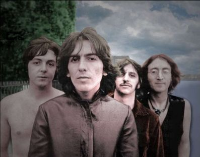
Todos sabemos que el grupo The Beatles revolucionó la música
popular; empezaron con rock and roll pero fueron diversificándose hasta poder
hacer con igual efectividad tanto rocks como blues, beat, baladas, temas psicodélicos
y canciones experimentales. Fueron eliminando el formato
estrofa-estribillo-estrofa-estribillo, empezaron
a finalizar los
temas de la forma menos esperada, a hacer temas largos (por ej.
It's all too much y I want you), a enganchar temas entre sí (por ej.
entre temas del album "Sgt. Peppers
lonely hearts Club Band" de 1967 y en casi todo el "lado B" del disco
"Abbey Road" de 1969), a usar instrumentos raros en el rock (por ej. clavicordio en
For no one y en Piggies, corno inglés en For no one, arpa en
She's leaving home, sección de cuerdas en
Eleanor
Rigby y otros temas, armonio en
We can work it out y otros, sítara en Norwegian wood y otros), a usar
nuevos métodos y dispositivos (a partir del album "Revolver" de 1966
incluyeron ruidos cotidianos, onomatopeyas de animales, efectos de sonido procesados, tramos de música
reproducida al revés; Strawberry
Fields forever fue el primer tema de la historia en incluir el melotrón;
"Abbey Road" es el primer disco de rock en el que se usó sintetizador Moog), a incorporar otros géneros (con aportes barrocos de su productor
George Martin, quien por ej. tocó el solo de piano en medio
del tema In my life y dirigió la sección de cuerdas en
Eleanor
Rigby; George Harrison incorporó música
indú luego de conocer la música de Ravi Shankar, por ej. en los
temas Love You to, Whithin you without you y The inner light), a grabar temas solo instrumentales (por ej. Flying,
donde también tocan melotrón). Comenzaron a
hacer temas innovadores (por ej. Tomorrow never knows, Blue Jay Way, I am the walrus, Lucy in the sky with
diamonds, A day in the life, Strawberry
Fields forever, Across the universe), y experimentales (por ej. Revolution
9). El disco "Sgt. Peppers
lonely hearts Club Band", que incluye varios de los temas nombrados antes
(grabado en la misma época que Strawberry Fields forever, que en un
principio formaría parte del album), fue innovador en su
conjunto y aportó aire fresco a la música del momento, además de ser
considerada una obra representativa de la psicodelia (tanto por su música como
por el arte de tapa, que también marcó un hito, diseñada por el artista pop
Peter Blake; también fue el primer disco que incorporó la impresión de sus
letras). Por supuesto estos temas convivían con canciones tontas como
Obladi Oblada o Maxwell's silver hammer. Es que por un lado Harrison
y Lennon querían experimentar y evolucionar, y McCartney se sentía muy cómodo
con las canciones de ritmo fácil y baladas tradicionales. Esta fue una causa
(solo una) de la separación del grupo. Aún con la ambigüedad de los últimos
años, The Beatles puso semillas que germinaron en las mentes de otros jóvenes
músicos que crearían el estilo que rompería límites en el rock.
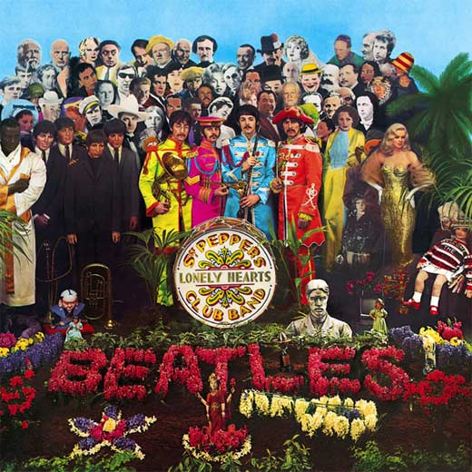
Tapa del disco "Sgt. Peppers..."
de
los Beatles, 1967.
En junio de 2007 Fripp visitó nuevamente Argentina para
tocar con los Crafty Guitarists, y en un reportaje confesó que este disco le
cambió la vida, ya que lo definió para dedicarse exclusivamente a la música. Tenía 21 años cuando una noche volvió a su casa, después de
haber tocado con una
banda de música bailable en un Hotel: “Volví a mi casa a las 12 y
media, prendí la radio y escuché una música aterradora. Al final de esa
orquesta aterradora, un acorde de piano... era Sgt. Peppers. Yo estaba en la
universidad, estudiando para recibirme de agente inmobiliario, con el objetivo
de trabajar en la empresa de mi familia. Nunca más.” (Página
12, 30/5/07). El tema que escuchó era A day in the life.
Otra canción de este album, Lucy in the sky with diamonds, fue uno de
los temas que tocó el recién formado King Crimson en su primer ensayo, en enero del '69.
Discos destacados del rock progresivo (además de todos los de King
Crimson y Fripp)
1969
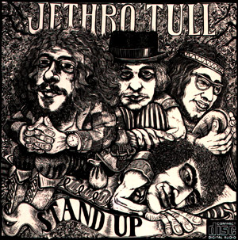 |
Stand
up (Párate), de Jethro Tull. Simple, fresco, hermoso. Segundo album de la
banda, donde se consolida
la fusión de rock con folk inglés y celta (y una pizca de barroco) que identificaría al
grupo a partir de aquí, liderado por el cantante, flautista y principal
compositor, Ian Anderson. También en este disco se hizo orquestación en una
canción (con sección de cuerdas), algo que el grupo haría habitualmente en el
futuro. Y el tema Bourée está basado en una pieza de Bach.
|
 |
 |
1970
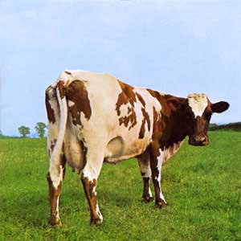
|
Atom
heart mother (Madre de corazón atómico), de Pink Floyd. Quinto album de la
banda. El tema que da nombre al disco es orquestado y coral, dura más de 23 minutos y ocupaba
todo un lado del disco de vinilo.
|
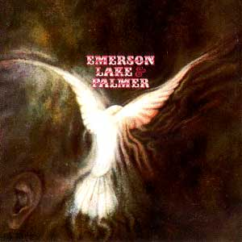
|
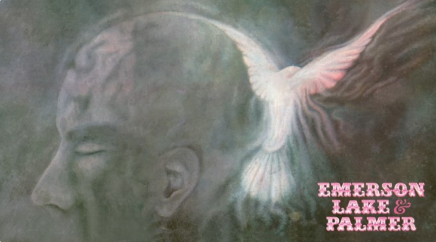
Emerson Lake
& Palmer, del trío del mismo nombre. Es su album debut. Rocks duros con
su típico sonido de órgano, sintetizador, bajo y batería, intercalados con
baladas de Lake con guitarra acústica, y tramos de música barroca y clásica. En
el tema The barbarian usan música
de Bartok, de la pieza Allegro Barbaro (Sz. 49) de 1911. Y en el tema Knife edge
adaptan la pieza Sinfonietta (escrita en 1926 por el
compositor checo Leos Janacek) y tramos de la pieza de Bach BWV 812.
|
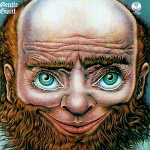 |
Gentle
Giant (Gigante gentil), del grupo del mismo nombre. Es su debut. Rock, soul y
aires de blues fusionados espléndidamente (aún dentro de un mismo tema) con
cantos medievales, música
preclásica inglesa y renacentista.[letra].
Abajo, la tapa doble desplegada.
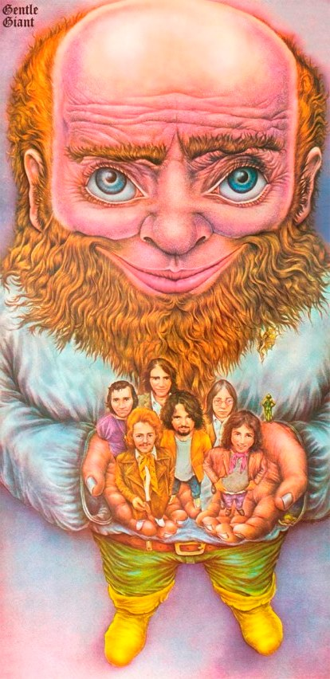 |
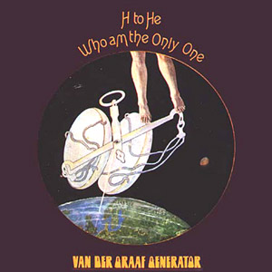 |
H to He, Who am the only one (Hidrógeno a
helio, que soy el único), de Van der Graaf
Generator. Tercer album del grupo, que comienza a ser identificado por el original y
por momentos desgarrador canto de su líder y principal compositor,
Peter Hammill. Tocó Fripp como invitado.
|
1971
|
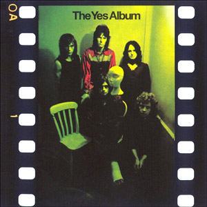
|
The Yes album, de Yes. El ingreso del guitarrista Steve Howe
enrutó a la banda. |
|
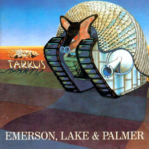
|
Tarkus,
de ELP. El tema que da nombre al disco ocupaba todo un lado del disco de vinilo y trata sobre
la lucha entre dos bestias mitológicas (Tarkus, una mezcla de tanque y
armadillo, dibujado en la portada, y Manticore, con cabeza de hombre y cuerpo de
león). Es uno de los temas conceptuales más representativos del rock
progresivo. El tema The only way incluye partes de dos piezas de Bach: Tocata
y fuga en Fa BWV 540 y Preludio y fuga nro. 6 Libro I de El clave bien
temperado. Un par de años después
ELP crearía su propio sello discográfico y lo llamaría Manticore. Abajo,
la tapa desplegada (interior).
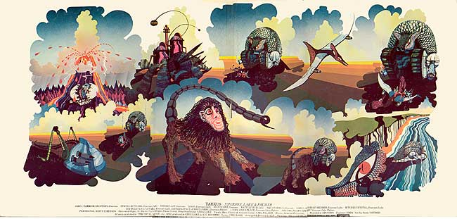 |
|
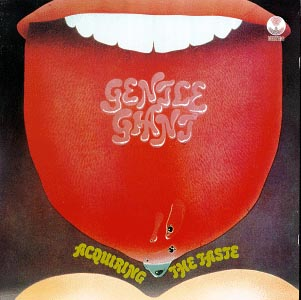
|
Acquiring the
taste (Tomando el gusto), de Gentle Giant.
|
|
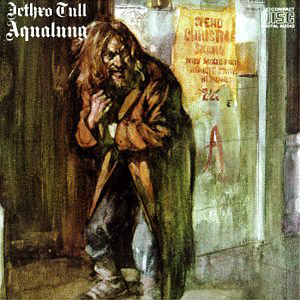
|
Aqualung,
de Jethro Tull. Las letras tratan sobre la miseria en el mundo actual, la
religión y la
hipocrecía de la iglesia como institución. Aqualung (dibujado en la portada a
imagen de Ian Anderson)
es un personaje que representa a un viejo vagabundo, una especie
de paria moderno. Abajo, la tapa desplegada (interior). [letras]
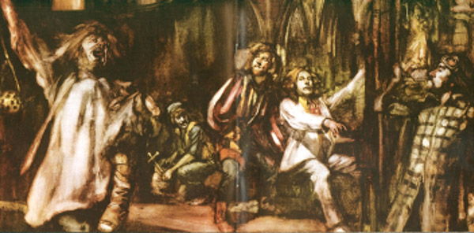 |
|
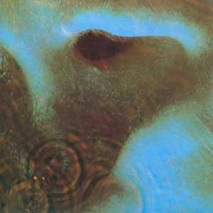
|
Meddle
(Entrometerse), de Pink Floyd. Repite la estructura del album anterior: un tema
de más de 23 minutos que ocupaba un lado del disco de vinilo, llamado Echoes (Ecos),
en
este caso sin coro ni orquestación, y piezas más cortas del otro.
|
|
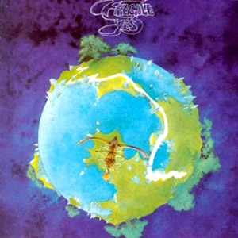
|
Fragile
(Frágil), de Yes. Cuarto album del grupo, con el que se mete de lleno en el rock
progresivo. Se incorpora Rick Wakeman con una batería de teclados, incluyendo
sintetizadores. Wakeman graba una adaptación de una obra del compositor clásico
alemán Johannes Brahms. La portada es ilustración del diseñador Roger
Dean.
|
|
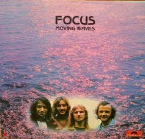
|
Moving waves (Olas movedizas), segundo album de Focus. Rock mezclado con clásico, barroco y canto
lírico (generalmente sin letra; las pocas veces que usaban voz, lo hacían como
si fuera un instrumento más). El
tema Eruption, con tramos de órgano bien emersoniano, dura 23 minutos y ocupaba un lado del
disco de vinilo. Forma parte de este disco el famoso rock
duro Hocus Pocus.
|
|
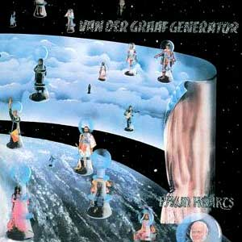
|
Pawn
hearts (Corazones de peones), de Van der Graaf Generator. Con solo tres
temas,
uno de ellos dura 23 minutos y ocupaba un lado del disco de vinilo, llamado A plague
of lighthouse keepers (Una plaga de fareros). Tocó Fripp como
invitado. [letra]
|
|
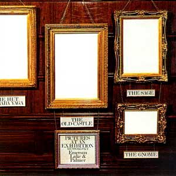
|
Pictures
at an exhibition (Cuadros de una exposición), de ELP. Album en vivo
en el '71 donde
el trío muestra su versión de la obra homónima de 1874 del músico clásico ruso
Modest Mussorgsky. |
1972
|
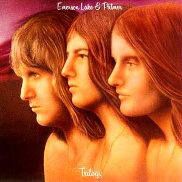
|
Trilogy
(Trilogía), de ELP. El tema Hoedown es adaptación de la pieza
homónima del
compositor estadounidense Aaron Copland, que forma parte del
ballet Rodeo de 1942.
|
|
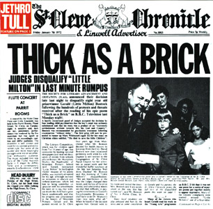
|
Thick
as a brick (Grueso como un ladrillo), de Jethro Tull. Obra cumbre de la
banda; es su disco más sinfónico, con predominio de los teclados. Consta de un solo tema, dividido en dos simplemente por las dos caras del
disco de vinilo. Es el primer album conceptual del grupo, basado en un poema de un niño
precoz ficticio.
|
|
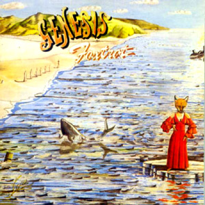
|
Foxtrot
(Paso de zorro), de Genesis. Cuarto album del grupo. El tema Supper's ready (La cena está lista)
dura 23 minutos y ocupaba casi todo un lado del disco de vinilo. [letras]
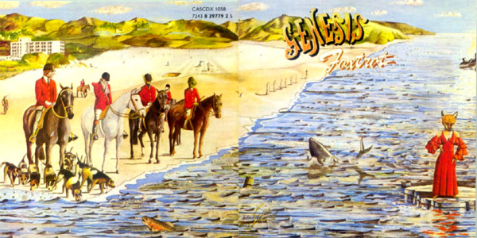 |
|
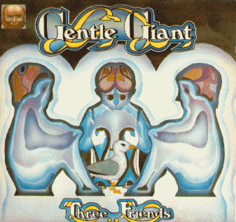
|
Three
friends (Tres amigos), de Gentle Giant. Grabado a fines de 1971, editado a
principios del '72. Album conceptual, sobre la historia
de tres amigos de la escuela que luego la vida llevaría por caminos muy
diferentes.
|
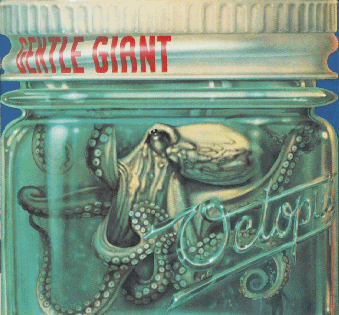 |
Octopus
(Pulpo),
de Gentle Giant. El nombre surge de la contracción de Octo Opus (Ocho obras), ya que
el album consta de esa cantidad de temas. Obra cumbre del grupo. A la izquierda, portada editada en USA.
Abajo, la editada en UK, con ilustración de Roger Dean.
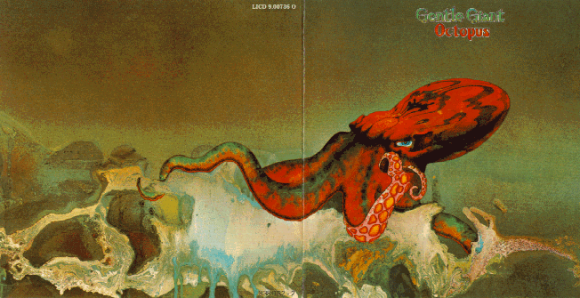 |
|
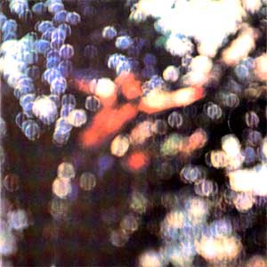
|
Oscured
by clouds (Oscurecido por las nubes), de Pink Floyd. Sin temas largos, es
un disco con frescas y hermosas canciones y buenas piezas instrumentales con el
ya típico sonido de la banda. Una antesala de The dark side of the moon.
|
|
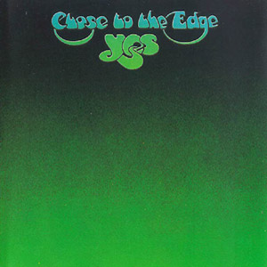
|
Close to
the edge (Cerca del abismo), de Yes. Con solo 3 temas, el que le da nombre al
album ocupaba
un lado del disco de vinilo y es otro de los temas conceptuales más representativos del
rock progresivo. Después de la grabación, Bill Bruford dejó el grupo para
unirse a Fripp en un nuevo King Crimson.
|
|
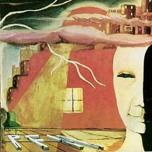
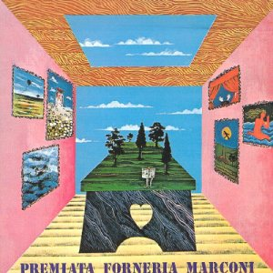 |
Storia di un minuto y Per un amico, los dos
primeros discos de Premiata Forneria Marconi, que se editaron con pocos meses de
diferencia. Influenciados por Yes, Genesis y
el primer King Crimson, pero con su propio estilo y la calidez del Mediterráneo,
más un toque renacentista.
Al año siguiente el sello Manticore (de ELP) editó Photos of ghosts (Fotos
de fantasmas), con un tema del primero y todos los temas del segundo, pero la mayoría cantados en inglés con nuevas letras de Peter
Sinfield. |
1973
 |
The six wives of Henry VIII (Las seis esposas de
Enrique VIII), de Rick Wakeman. Seis temas instrumentales conforman este album
conceptual del tecladista de Yes, su primer disco solista. Colaboraron otros
integrantes de la banda (Squire, Howe y Bruford).
|
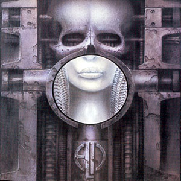 |
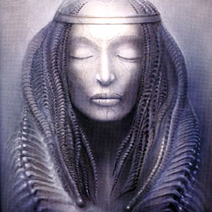 Brain salad surgery (Cirugía de ensalada de cerebro), de
ELP. Con letras de Peter Sinfield. El tema Toccata es adaptación del 4º movimiento del Concierto para piano
y orquesta nº 1, de 1961, del músico académico argentino Alberto
Ginastera. La portada, realizada por el diseñador suizo Hans Ruedi Giger, se
convirtió en una de las más famosas y valoradas del rock progresivo.
|
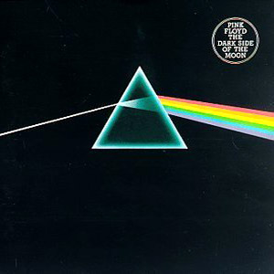
|
The dark side of the moon (El lado oscuro de la luna), de Pink Floyd.
Obra cumbre de la banda. A través de los años se convirtió en uno de los discos más vendidos de todos los
tiempos. Las letras tocan temas
problemáticos de la
sociedad actual (consumismo, violencia, locura), por lo que muchos críticos lo
consideran un album conceptual (además del hecho de que la mayoría de los
temas están encadenados musicalmente).
|
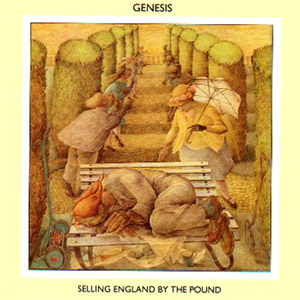
|
Selling
England by the pound (Vendiendo Inglaterra por libra. Nota: la libra es una
unidad de peso), de Genesis.
Explosión de emociones. Primer disco del grupo en el que el tecladista Tony Banks
usó sintetizadores.
|
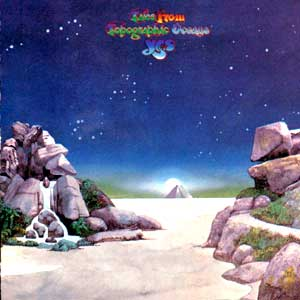
|
Tales from
topographic oceans (Cuentos de los océanos topográficos), de Yes. Obra
cumbre del grupo. Doble album conceptual, con las letras en base a filosofías de escrituras del hinduísmo
sánscrito.
Tiene cuatro temas, cada uno ocupaba un lado de los discos de vinilo. Portada ilustrada
por Roger Dean (desplegada abajo). Es uno de los mejores discos del progresivo, y paradigma del
rock sinfónico. A sus más de 80 minutos de duración no le sobra ni le falta
una sola nota.
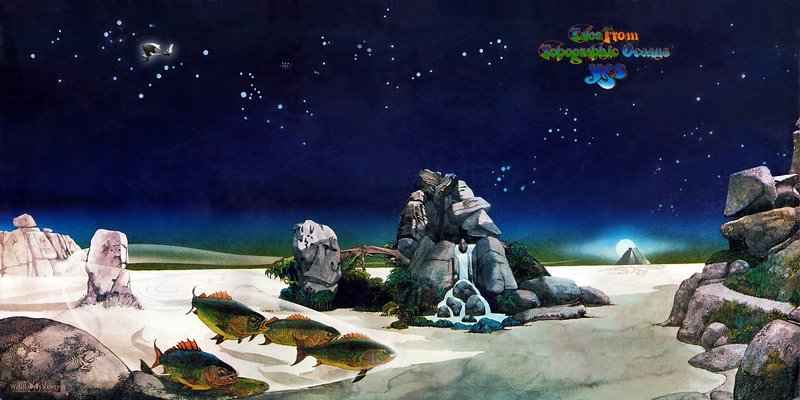 |
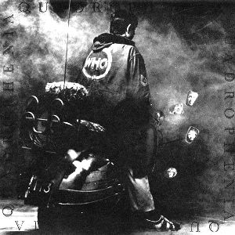 |
Quadrophenia, de The Who. Si bien la banda no es del
palo del progresivo, este gran disco doble es especial, y tiene muchos elementos
de ese estilo musical. Por empezar, es conceptual, narra una historia
(vicisitudes de un adolescente inglés de mediados de los años 60); en varias
partes del album se incorporan sonidos ambientales que tienen que ver con esa
historia; varios temas están enganchados con el siguiente; dos de las piezas
más importantes son largas e instrumentales, e integran melodías de otros
temas; Townshend, además de la guitarra, toca sintetizadores en gran parte del
album, a veces simulando un conjunto de violines, en otros tramos simulando
vientos, por lo que en algunos momentos
se escucha música más cercana al rock sinfónico que al rock clásico. |
1974

|
The
lamb lies down on Broadway (El cordero yace en Broadway), de Genesis. Obra
cumbre del grupo. Album doble conceptual, sobre un joven portorriqueño (llamado Rael) que deambula por las calles de Nueva York
y le ocurren situaciones fantásticas. En la foto de abajo, Peter Gabriel representando a Rael en una presentación en vivo de la
obra. Luego de la gira de 1975, Gabriel abandonó el grupo para comenzar su
carrera solista.
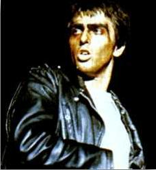 |
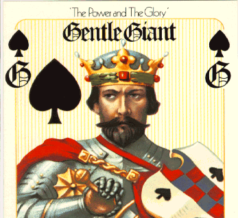
|
The power
and the glory (El poder y la gloria), de Gentle Giant. Otro album
conceptual de la banda, en este caso sobre la corrupción en la política.
|
|
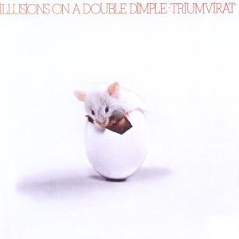
|
Illusions
on a double dimple (Ilusiones sobre un doble hoyuelo), segundo album de
Triumvirat, un trío
alemán formado a imagen de The nice y luego fuertemente influenciado por ELP.
|
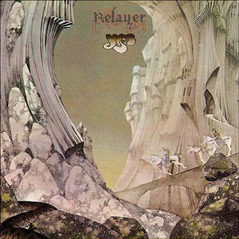
|
Relayer
(Relevo), de Yes. Repite la estructura de Close to the edge: con tres
temas, uno de 22 minutos que ocupaba un lado del disco de vinilo, llamado The gates of
delirium (Las puertas del delirio) y otros dos largos en la otra cara. También con portada ilustrada por Roger Dean
(desplegada abajo).
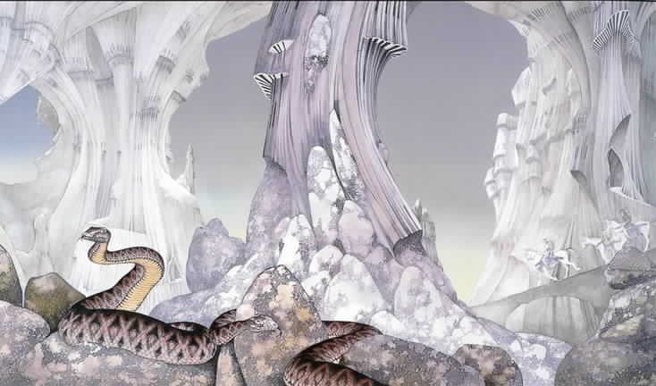 |
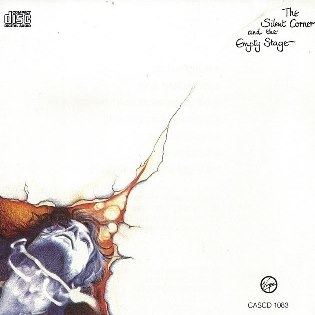 |
The silent corner and the empty stage (El rincón
silencioso y el escenario vacío), de Peter Hammill. Su tercer disco solista,
pero con el sonido de su banda Van der Graaf Generator (en ese momento disuelta),
ya que participaron todos sus ex compañeros y el tema más largo, A louse
is not a home (Un piojo no es un hogar), lo compuso años antes para un
album del grupo que nunca se grabó.
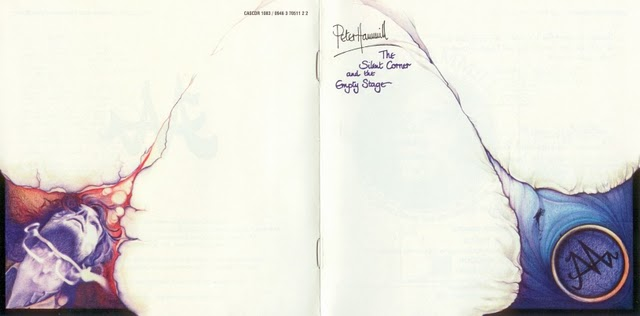
|
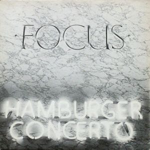 |
Hamburger concerto, cuarto album de Focus (a pesar de su título, no es
un disco en vivo). El tema que da nombre al disco
dura más de 20 minutos y ocupaba todo un lado del vinilo. |
1975
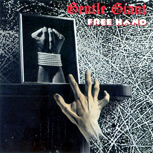
|
Free
hand (La mano libre), de Gentle Giant.
|
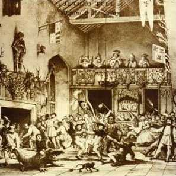 |
Minstrel
in the gallery (El juglar en la galería), de Jethro Tull. Con música
similar a la de Thick as a brick, pero con menor predominio de los
teclados y mayor protagonismo de la guitarra eléctrica en las partes duras y de
una sección de
cuerdas (violines, violonchelo, etc.) en las partes suaves.
|
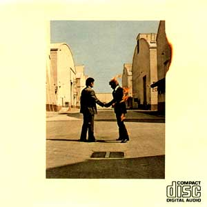
|
Wish
you were here (Deseo que estuvieras aquí), de Pink Floyd. Las letras
insisten con la locura y tratan también sobre la presión y manipulación de la
industria discográfica sobre los músicos de rock (temas que serían nuevamente
tratados
en el doble album conceptual The Wall, de 1979).
|
1976
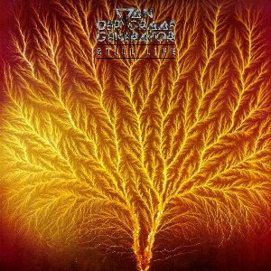 |
Still life (Naturaleza muerta), de Van der Graaf
Generator
|
1977
|
Animals (Animales) de Pink Floyd. Album
conceptual sobre la decadencia de la sociedad industrializada consumista. Divide a la humanidad en 3 tipos de personas,
identificados con animales: perros, cerdos y ovejas. El disco tiene
principalmente 3 temas largos, cada uno dedicado a uno de esos tipos. |
|
|
Songs from the wood (Canciones del bosque) de Jethro
Tull. Como lo sugiere su título, es un album de rock felizmente combinado
con folk británico, incluyendo melodías medievales. |
1978
| |
Vital,
de Van der Graaf (la banda que antes se llamaba Van der Graaf Generator).
Impresionante albun doble en vivo. Excelentes versiones de temas anteriormente
editados, con un nuevo sonido más pesado (casi sin teclados electrónicos, con
más guitarra, un bajo poderoso y con la adición de
cello y violín), más un par de temas inéditos. Unos meses después de la grabación de este recital
la banda se disolvió por segunda vez.
|
|
|
Heavy horses (Caballos pesados) de Jethro Tull. Hermosas melodías
con predominio del folk, como el album del año anterior. |
|
|
U.K., primer album del grupo homónimo. La última base rítmica de
King Crimson (Bruford y Wetton), más el guitarrista Allan Holdsworth (ex Soft
Machine), y el violinista-tecladista Eddie Jobson (ex Zappa), realizaron este
excelente disco con una alta dosis de fusión jazz-rock. |
1986
 |
So (Así, o Entonces), de Peter Gabriel. Como en todos los
discos solistas de Gabriel, importante aporte de Tony Levin en bajo. [letra]
|
1996
| |
Keys to ascension (Las claves del ascenso), de
Yes. Doble CD, uno grabado en vivo ese año en San Luis Obispo (California), con
excelentes versiones de clásicos pasados, y otro grabado en estudio con temas
nuevos. Uno de estos temas, That that is (Eso es), dura casi 20 minutos,
evoca los largos temas conceptuales de la primera mitad de los años '70 y es de
gran calidad. Dibujos de Roger Dean.
|
Cómo conocí el rock progresivo
En 1973 el sello Music Hall editó el disco
“Los pesados, por supuesto”, solo en Argentina. Tenía temas de bandas
internacionales famosas (entre ellos, varias gemas del progresivo) y algunos
temas de bandas argentinas. Gran álbum. ¡Vean la lista! Después de
escucharlo, me interesé por Yes, ELP, Jethro Tull, y me prestaron los discos Larks’
tongues in aspic y Starless and bible black, y me enamoré de King
Crimson.
Lado
A
1.-
The ocean (Led Zeppelin)
2.-
Total mass retain (Yes)
3.- Concientemente todo, todo lo
podrás lograr (Billy Bond y la pesada)
4.- From the beginning (ELP)
5.-
Eat that question (Frank Zappa & The mothers)
6.- Todo es todo (Kubero Díaz)
Lado
B
1.-
Black hearted woman (The Allman brothers band)
2.- Cindy incidentally (Faces)
3.- Con Elvira es otra cosa
(Pappo’s blues)
4.-
New walkin blues (Paul Butterflied’s better days)
5.-
Love story (Jethro Tull)
6.-
School’s out (Alice Cooper)
|
 Rock progresivo
Rock progresivo